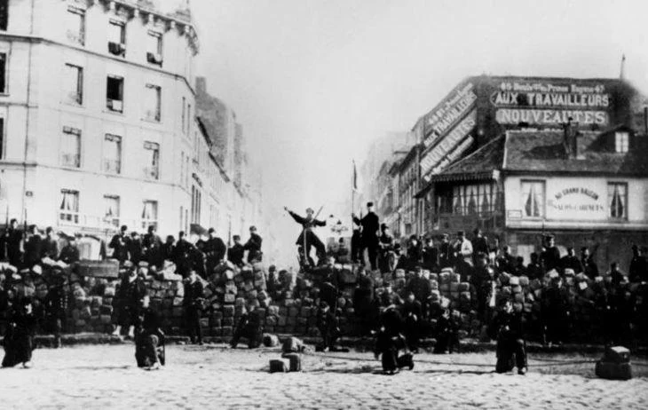

Publication sur X
Commune de Paris. La mémoire de la Semaine sanglante
Date de publication sur X · 22 mai 2020
Texte de la publication sur X
Il y a 149 ans, le 21 mai 1871, la bourgeoisie française lâchait ses chiens contre la #CommuneDeParis. Le massacre du Paris populaire était programmé, la Semaine Sanglante commençait #noublionspas https://t.co/Rdxk4kdj9B

Sources
PCF 79 · @79Parti sur X · AR-0005-TW-1263810127863459840
À lire aussi · À Châteaubriant, l’hommage du 22 octobre aux fusillés · Le lien d’origine